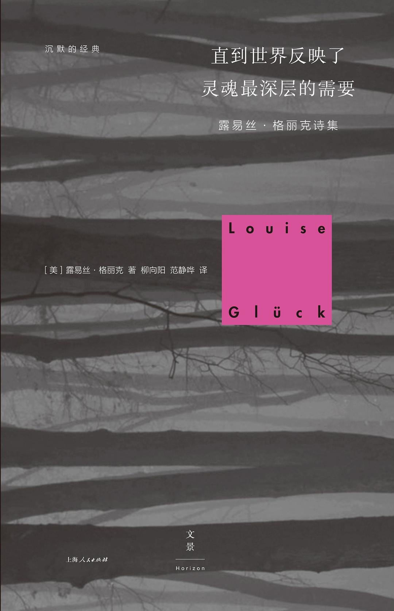
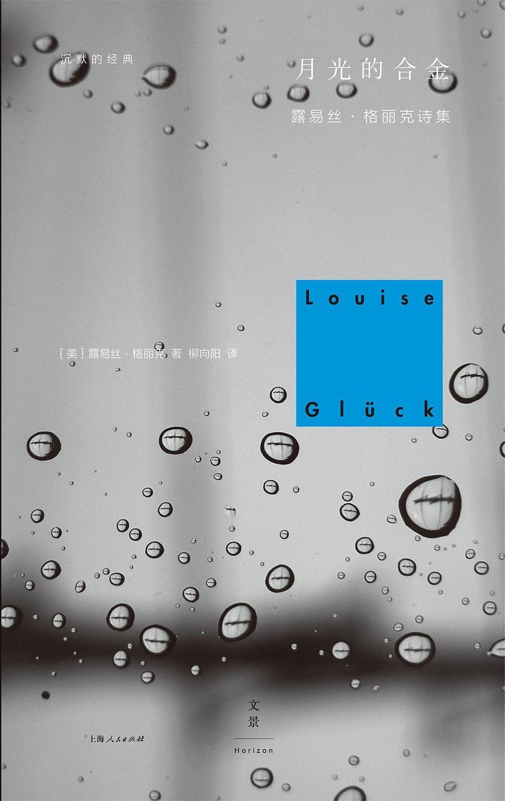

出生：1943年4月22日；美国纽约
高中时罹患神经性厌食症，后康复。其后于莎拉·劳伦斯学院和哥伦比亚大学就读，未取得学位。
作品以强烈的感情著称，在对现代人生活及自身个人经历进行沉思时，常以神话、历史或自然作为意境，探索主题广泛，内容主要为刻画创伤、欲望和自然的各个方面，特点是坦承表达悲伤和孤独的情感。
授奖词：以带有朴素美感、准确无疑的诗歌语言将个人的存在普遍化。
|
路易丝·格吕克
出生：1943年4月22日；美国纽约 高中时罹患神经性厌食症，后康复。其后于莎拉·劳伦斯学院和哥伦比亚大学就读，未取得学位。 授奖词：以带有朴素美感、准确无疑的诗歌语言将个人的存在普遍化。 |
|
|  |
直到世界反映了灵魂最深层的需要 本书完整收录了格丽克的《阿弗尔诺》（新英格兰笔会奖）和《村居生活》（格林芬诗歌奖短名单）两本诗集；此外还有早期五本诗集的精选，涉及的诗集为《头生子》（美国诗歌学会诗人奖）、《沼泽地上的房屋》、《下降的形象》、《阿基里斯的胜利》（全国书评界奖）、《阿勒山》（国会图书馆丽贝卡·博比特全国诗歌奖）。 |
|  |
月光的合金 本书收录了格丽克的四本诗集，《野鸢尾》（普利策诗歌奖）、《草场》、《新生》（《纽约客》诗歌图书奖）、《七个时期》（普利策诗歌奖短名单），均为成熟期的重要作品。 |